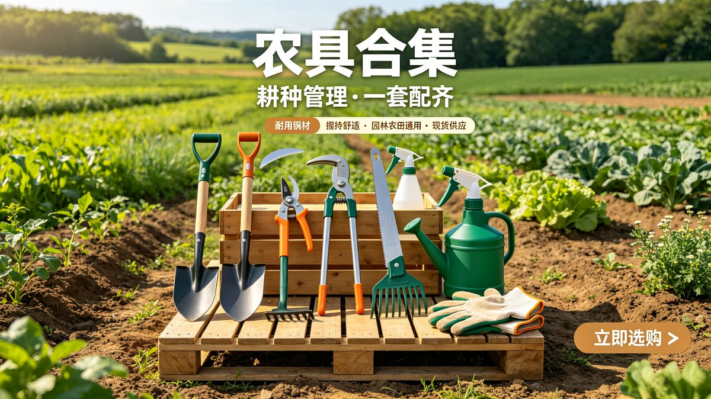
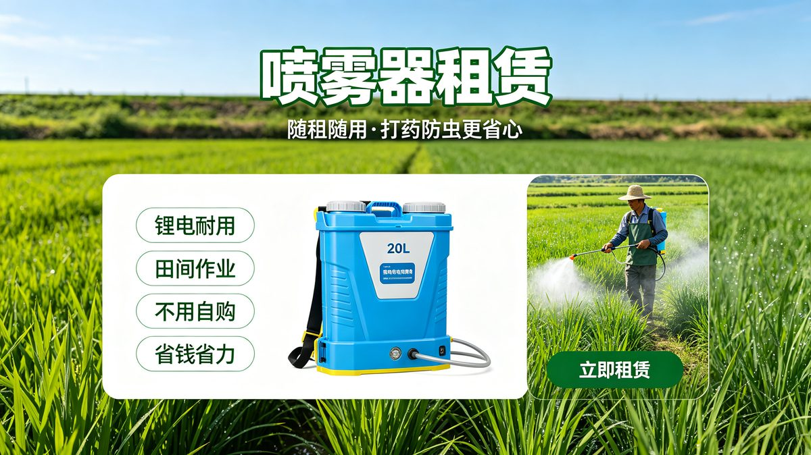

李
早上好，李叔
当前地块：水稻示范田
今日建议：上午通风，午后防涝
今日田间助手
早上好，李叔
当前地块：水稻示范田
今日建议：上午通风，午后防涝
26℃~32℃
多云转小雨
风力3级
暴雨提醒
未来4小时有中到大雨
建议
疏通排水沟，雨后复查虫害
水稻防虫套餐
农资套餐分藏肥套装
肥料
农具
农具
喷雾器租赁
租赁未找到相关农资，换个关键词试试
李叔 农户
农户编号：NG202601
3块
绑定地块
水稻示范田·分蘖期
推荐方案
稳氮增磷补钾
今日施肥量
第1天
基肥复配
第3天
浅水追肥
第7天
观察叶色
近7天长势趋势图占位
作物照片占位（拍照 / 相册上传）
识别结果
稻飞虱
发现时间：今天09:25
先用吡虫啉喷雾，7天后复查
避免正午施药，穿戴防护用品